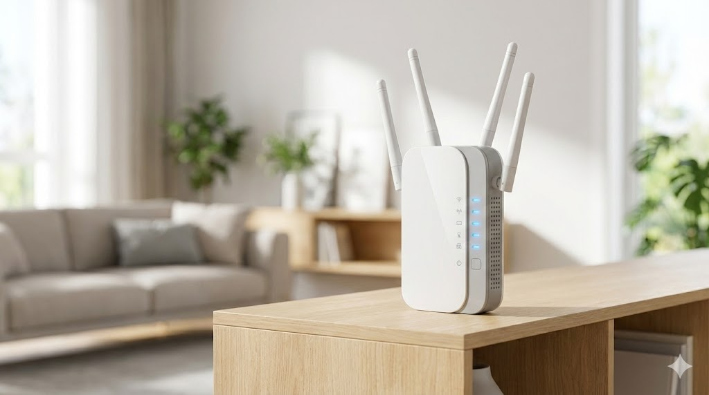
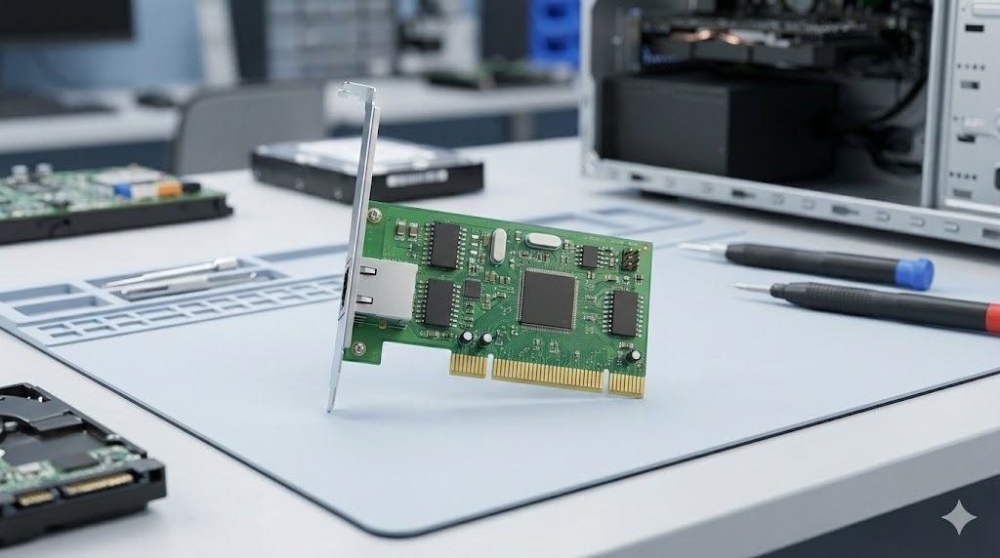

Hi, I'm Muhammad Fadhil Abdillah
Tugas Besar : Jaringan Komputer
- NIM: 607012500087
- Kelas: D3SI-49-04
- Prodi: D3 Sistem Informasi
- Matkul: Jaringan Komputer
Device Database
01. Router Wireless
Unit navigasi utama yang menghubungkan jaringan lokal (LAN) ke gerbang internet (WAN) dan mengatur rute lalu lintas data antar galaksi jaringan.

02. Switch Networking
Pusat komando yang menghubungkan banyak perangkat dalam satu armada jaringan lokal (LAN) agar dapat berkomunikasi secara efisien.

03. Repeater Signal
Perangkat penguat sinyal yang meregenerasi transmisi data yang lemah untuk mempertahankan integritas komunikasi jarak jauh di ruang hampa.
04. NIC (Network Interface Card)
Modul ekspansi perangkat keras (Expansion Board) yang memungkinkan unit komputer terhubung dan berinteraksi dengan sistem jaringan.
Mission Data Archives
Akses data rahasia mengenai prosedur hosting dan penyusunan isi website: